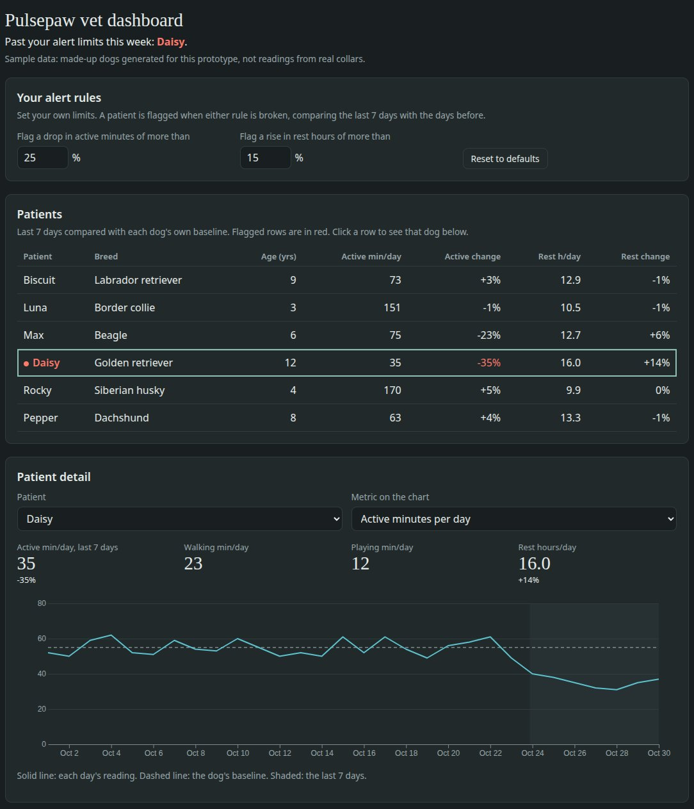
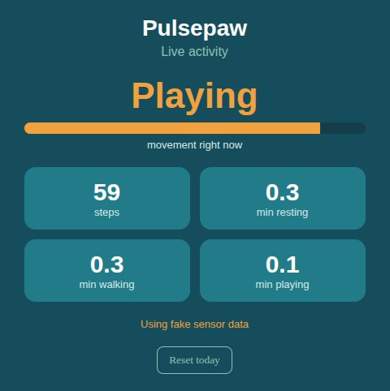
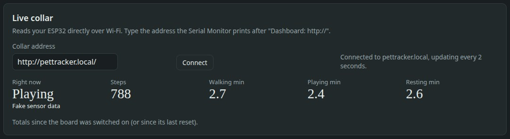

See when a dog slows down between visits.
Pulsepaw is a small activity collar and a dashboard for vets. It learns each dog's own normal and flags the ones whose walking, playing and resting change, using limits you set.
Most of a dog's recovery happens at home, out of sight.
After a surgery or a new arthritis plan, the clinic usually learns how a dog is doing from a recheck or a phone call, and from what the owner remembers.
“She's been a bit slow this week, I think?”
Owners notice change late, and they describe it in different ways. Pulsepaw gives the vet a measured trend for each dog, compared with that same dog's normal rather than an average for the breed.
A collar that counts, a baseline per dog, and alerts you define.
-
The collar counts
A motion sensor is read 50 times a second. Every second the collar decides whether the dog is resting, walking or playing, and counts steps.
-
Each dog sets its own normal
The dashboard compares the last 7 days with the weeks before, so a calm senior dog and a young husky are each judged against themselves.
-
You set the alert rules
Choose the limits, such as a 25% drop in active minutes or a 15% rise in rest. Dogs past them are flagged at the top of your list.
An early prototype that runs today.
Everything below is built and working on a development board on my desk. It hasn't been on a real patient yet.



Built by one developer in Fremont.
I'm Ravin. I started Pulsepaw with an ESP32 development board and a small motion sensor. I wrote the collar firmware, the live phone page and the vet dashboard myself.
Before building further, I'm talking to vets, vet techs and practice managers to find out which problem is actually worth solving.
Could you spare 15 minutes?
I'm not selling anything. I want to hear how your clinic follows up with dogs today, by phone or in person, whenever suits you.
Reply to the email I sent your clinic, or write to me directly:
ravin.bhakta@gmail.com- After a surgery, how do you find out how the dog is doing at home?
- For older or arthritic dogs, how do you tell whether they're better or worse between visits?
- Which part of your day does the software slow down most?